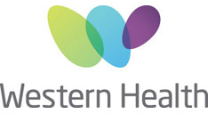
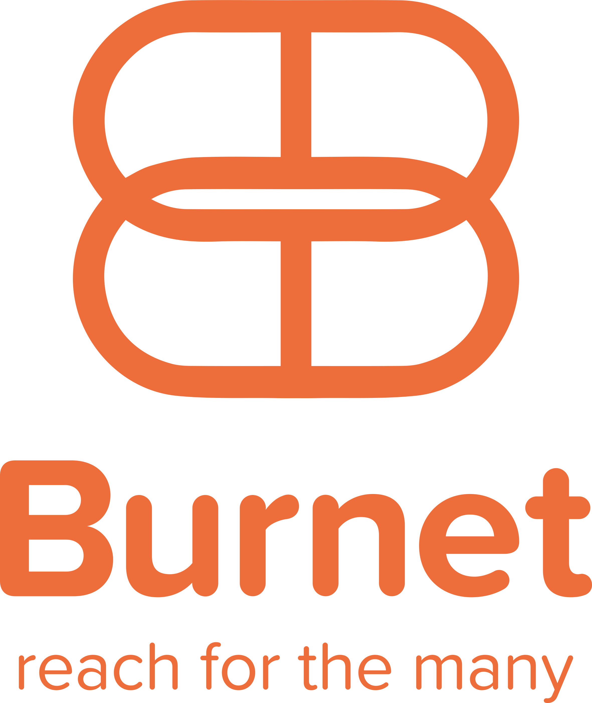

High numbers of people with drug dependence in Australian prisons, inconsistent management of drug dependence and withdrawal between jurisdictions, and poor post-release outcomes among people with drug dependence warrant coordinated intervention. The National Prison Addiction Medicine Network (NPAMN) was created in August 2023, to bring together stakeholders across the sector to develop consensus guidelines for the management of addiction in custodial settings and promote evidence-based best-practice healthcare for people in prison through a coordinated national approach.
The NPAMN aims to create consensus guidelines around the following domains:
- Withdrawal management, particularly in locations without a subacute ward;
- Opioid agonist treatment provision, including continuation and initiation;
- Provision of psychosocial interventions within custodial settings dealing with substance use and relapse prevention;
- Management of co-occurring trauma/mental illness and dual diagnosis concerns;
- Management and screening of blood-borne viruses;
- Harm reduction interventions including NSPs, take-home naloxone and peer-based mentoring; and
- Discharge planning and transitioning people from prison-based to community-based care.
The NPAMN is currently administratively supported by Western Health and the Burnet Institute.

